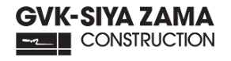

Vacation Work Opportunities
Gain valuable industry experience during university holidays by participating in vacation work programmes offered by leading engineering and built environment companies.
Last Updated: July 2026
Engineering Vacation Work
Sasol Vacation Work Programme
Gain practical engineering experience during university holidays while working alongside industry professionals.
Learn MoreKantey & Templer Consulting Engineers Vacation Work Programme
Apply classroom knowledge in real engineering projects.
Learn MoreBosch Vacation Work Programme
Gain practical experience in engineering, technology, and innovation during university holidays.
Learn More
Transnet Vacation Work
Vacation work across rail, ports and freight engineering operations throughout South Africa.
Learn MoreBuilt Environment Vacation Work

WBHO Vacation Work
Work on large construction and infrastructure projects during university holidays.
Learn MoreEquites Vacation Work
Gain practical experience in construction materials and infrastructure projects during university holidays.
Learn More
GVK-Siyazama Construction Vacation Work
Work on construction and infrastructure projects during university holidays.
Learn MoreFor more information on the vacation work programmes, please visit the respective websites.